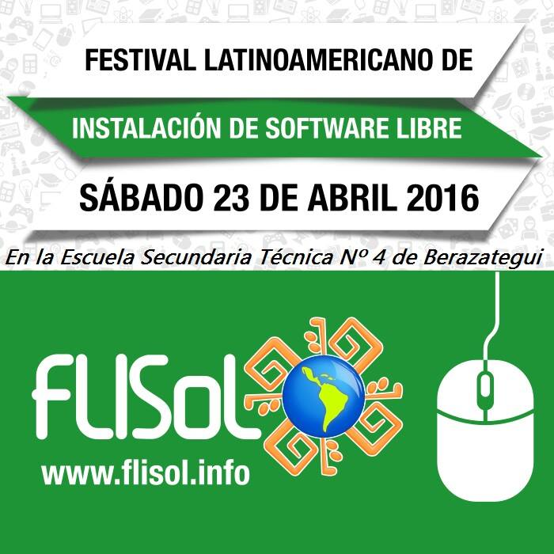
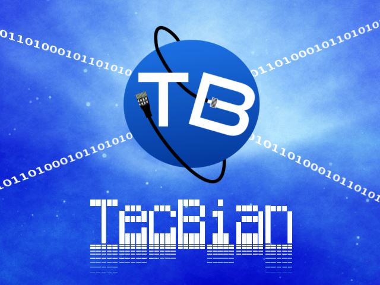
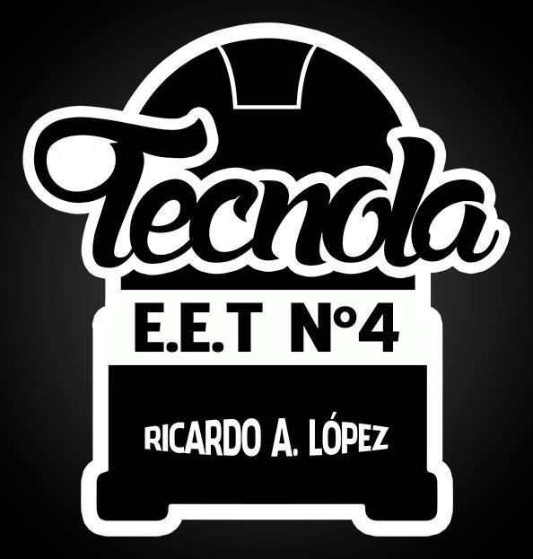

por Tecnica Nº4
El FLISoL es el evento de difusión de Software Libre más grande en Latinoamérica y está dirigido a todo tipo de público: estudiantes, académicos, empresarios, trabajadores, funcionarios públicos, entusiastas y aun personas que no poseen mucho conocimiento informático..
El FLISoL se realiza desde el año 2005 y desde el 2008 se adoptó su realización el 4to Sábado de abril de cada año. La entrada es gratuita y su principal objetivo es promover el uso del software libre, dando a conocer al público en general su filosofía, alcances, avances y desarrollo.

por Tecnica Nº4
Misión
En educación, cuando aprendemos a utilizar computadoras, lo importante de usar software libre es que aprendemos sobre conceptos y no sobre marcas, y ofrecemos a los estudiantes la libertad de estudiar en profundidad lo que el software hace y cómo está construido, participando así de una cultura de colaboración y libertad que es imposible desde el software privativo.
El software libre construye comunidades de colaboración a su alrededor, cultiva la premisa de la cooperación y fomenta el libre acceso a la información. Cuando usamos software no libre en educación, no educamos, sino que adiestramos en el uso de un determinado programa, cerrando la puerta al aprendizaje y promovemos valores éticamente incorrectos: enseñamos a nuestros chicos que compartir es delito.
El software libre permite deconstruir y volver a construir, permite entender otras formas de hacer las tareas, encontrar el lenguaje para comunicarse con las computadoras y compartirlo con otras personas.

por Tecnica Nº4
Se basa en la construcción de Fonolas, implementando el reciclado de componentes informàticos y electrónicos de distintos artefactos en desusos, como gabinetes, monitores, teclados, fuentes de alimentación, cables, etc, como también la instalación y desarrollo del software específico, la construcción de los mobiliarios que forman parte de este proyecto. El mismo tendrá incluido un sistema de tragamoneda para su funcionamiento.